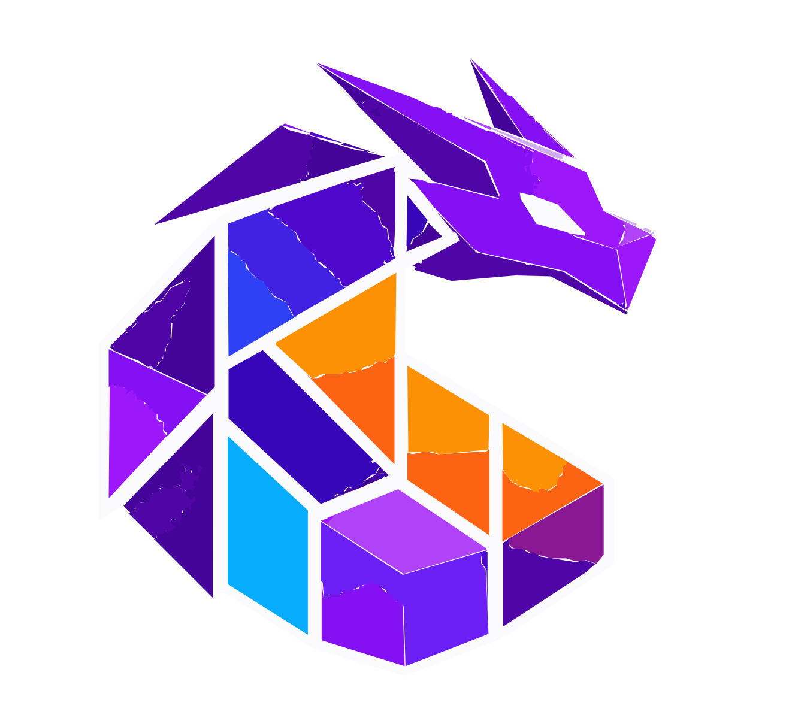

Overview
Purpose
To provide a fantastical creature storage system for those who want to stay organized.
Audience
Gamers or other owners of fantastical creatures who strive for hyper-efficiency and organization to accomplish
Dynamic elements
-
Content Filing
-
Creature Sorting
-
Form-based creature adding
Branding
Website Logo

Style Guide
Color Palette
Palette URL: https://coolors.co/6d28d9-f97316-38bdf8| Primary | Secondary | Accent 1 | Accent 2 |
|---|---|---|---|
| [#6D28D9] | [#F97316] | [#38BDF8] |
Pseudocode for your project
- Create the creature objects
- Plug them into the html format
- Load the objects
- Make the sort function
- Have it take arguments for sort key and direction
- Create form structure
- Name field (any, required)
- Level field (int, required)
- Health field (int, required)
- Submit button
Wireframes
Landing page
Form fields will be included above the create creature button.